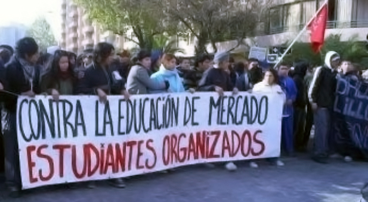

Movimiento #YoSoy132
Fue un movimiento ciudadano conformado en su mayoría por estudiantes de educación superior,El movimiento inicialmente buscaba: la democratización de los medios de comunicación El nombre YoSoy132 se refiere a la autoafiliación y apoyo al movimiento como el miembro número 132 tras la publicación de un vídeo en el que 131 estudiantes contestan las declaraciones de algunos funcionarios públicos. ¡Fuera! ¡La Ibero no te quiere! ¡Atenco no se olvida! 2 muertos, 253 Personas detenidas, 47 Mujeres violadas.